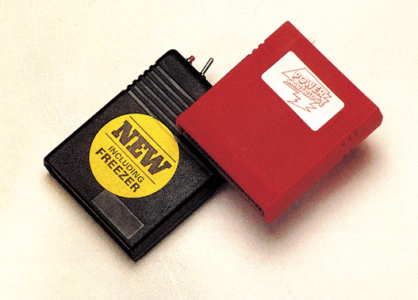

Zwei fliegende Holländer
Daß unsere holländischen Nachbarn nicht nur exzellenten Käse, sondern auch besonders gute Programm-Module herstellen können, beweisen »The Final Cartridge« und »Power Cartridge«.

Etwas verwunderlich ist es schon, daß gerade aus Holland zwei neue Module mit einander ähnlichen Funktionen kommen, die es sonst in dieser Kombination nirgendwo gibt. Und als wir in der Redaktion dann noch hörten, daß beide Module für je 149 Mark in Deutschland zu haben sind, stand eines fest: Wir nehmen »Power Cartridge« und »The Final Cartridge« in einen Vergleichstest.
Beide Module werden in den Expansion-Port des C 64 gesteckt und nehmen gleich beim Einschalten des Computers ihre Arbeit auf. Während sich »Power Cartridge« mit einem aus Sprites bestehenden Titelbild meldet, das bei Tastendruck wieder verschwindet, erscheint beim »Final Cartridge« ein Menü mit vier Optionen: Reset, Monitor, Standard C 64 und Speicher löschen. Zunächst zum äußeren Erscheinungsbild: Beide Module haben je einen Taster. Bei »Final Cartridge« ist dies ein Reset-Taster, auf dessen Druck das schon erwähnte Menü folgt, »Power Cartridge« hingegen hat einen Einschalttaster, der es in gerade ablaufende Programme einblenden läßt. »Final Cartridge« verfügt zusätzlich noch über einen Ausschalter, der das Modul komplett vom Expansion-Port trennt, ohne daß es herausgezogen werden muß. Dies kann aus Kompatibilitätsgründen manchmal notwendig sein. Das »Power Cartridge« läßt sich nur durch Herausnehmen vollständig entfernen.
Beide kennen natürlich ein Kommando, um die Cartridge softwaremäßig auszuschalten. Doch hierbei kann die Gefahr bestehen, daß ein Programm die Cartridge aus Versehen oder aber auch aus Kopierschutzgründen wieder einschaltet und dann abstürzt. Bei einem Praxis-Test mit mehreren kopiergeschützten Original-Programmen hatten wir aber mit keinem der beiden Module Probleme, wenn sie softwaremäßig abgeschaltet wurden. Ebenso können beide Module, zumindest teilweise, nachträglich hinzugeschaltet werden. So kann man zum Laden eines kopiergeschützten Programms den Schnellader abschalten und später zum Nachladen von Programmteilen oder Speichern von Zwischenergebnissen wieder reaktivieren.
Bei vollständig eingeschaltetem Modul erwies sich das »Power Cartridge« kompatibler als das »Final Cartridge«. Anscheinend gibt es in diesem Fall beim »Final Cartridge« Probleme mit Programmen, die an das RAM unter dem ROM wollen beziehungsweise dort Grafikdaten wie etwa Sprites ablegen.
Alles in einem Modul
Für Programmierer sind das eingebaute Toolkit und der Maschinensprache-Monitor sehr interessant. Da beide Module die schon länger üblichen Standard-Befehle anbieten, möchten wir Sie hier auf die Tabellen 1 und 2 verweisen, die alle vorhandenen Befehle enthalten. Wo die Befehle besondere
| Funktion | Power Cart. | Final Cart. |
|---|---|---|
| Automatische Zeilennumerierung | AUTO | AUTO |
| Farbänderung | COLOR | — |
| 16-Bit-PEEK | DEEK | — |
| Zeilen löschen | DELETE | DEL |
| 16-Bit-POKE | POKE | — |
| Variablenliste | DUMP | — |
| Suchen von Text im Programmcode | FIND | FIND |
| Hardcopy | HARDCOPY | CTRL-+ |
| Hexadezimal-Umrechnung | HEX$, $ | &, $ |
| Befehlsanzeige | INFO | — |
| Funktionstastenanzeige | KEY | — |
| Fehlerhafte Zeile zeigen | — | HELP |
| Programme zusammenbinden | MERGE | — |
| Programme aneinanderhängen | MERGE | APPEND, DAPPEND |
| Warteschleifen | PAUSE | — |
| Renumber | RENUMBER (bereichsweise) | RENUM |
| Tastatur-Repeat | REPEAT | — |
| Stop/Restore verbieten | SAFE | — |
| Programmlauf mitverfolgen | TRACE | — |
| NEW rückgängig machen | UNNEW | OLD |
| Modul abschalten | QUIT | KILL |
| Laden von Diskette | DLOAD | DLOAD |
| Speichern auf Diskette | DSAVE | DSAVE |
| Verify auf Diskette | DVERIFY | DVERIFY |
| Directory | DIR | CATALOG |
| Kommando senden | DISK | SYS" |
| Geräteadresse Laufwerk ändern (von 8 auf 9) | DEVICE | — |
| Programm laden und für Backup vorbereiten | ILOAD | — |
| Backup-File laden | BLOAD | FLOAD |
| Programm auf Drucker ausgeben | PLIST | — |
| Drucker-Parameter einstellen | PSET | — |
| Directory auf Drucker ausgeben | HARDCAT | — |
| In den Monitor springen | MONITOR | MONITOR |
| Bildschirmausgabe auf Drucker umleiten | — | TYPE |
| RAM unter dem ROM nutzen | — | MW, MR |
| Kassettensignal sichtbar machen | AUDIO | — |
| Funktion | Power Cart. | Final Cart. |
|---|---|---|
| Line-by-Line-Assembler | A | A |
| Speicherbereiche vergleichen | C | C |
| Disassemblieren | D | D |
| Speicherbereich füllen | F | F |
| Programm starten | G (J) | G |
| Hex-Bytes suchen | H | H |
| ASCII-Folge suchen | H | — |
| Hex-Bytes ansehen | M (I) | M |
| Laden (auch verschieblich) | L | L |
| Druckerausgabe | P | — |
| Registeranzeige | R | R |
| Speicherbereich speichern | S | S |
| Speicherbereich verschieben | T | T |
| Verify | V | V |
| Maschinenprogramm unter Kontrolle abarbeiten | W | — |
| Zurück zu Basic | X | X |
| Directory | $ | @ |
| DOS-Befehl | ← | @ |
| Auf- und Abwärts-Scrollen | nein | ja |
| Bank-Switching | R | O |
| Disk-Sektor lesen | — | *R |
| Disk-Sektor schreiben | — | *W |
Eigenschaften aufweisen, sind diese in der Tabelle erklärt. Gerade die Monitore der Module sind besonders nützlich, denn sie belegen, bis auf ein paar Byte in der Zeropage, praktisch kein RAM. Andererseits kommt man mit ihnen an die kompletten 64 KByte, also auch das RAM unter dem ROM und dem I/O-Bereich heran.
Ebenfalls in beiden Modulen vorhanden sind Schnellade und -speicher-Routinen für Diskette und Datasette. Auch hier werden die Standardgeschwindigkeiten (Diskette 5mal, Datasette 10mal schneller) erreicht. »Final Cartridge« gibt beim Laden zusätzlich noch in hexadezimalen Zahlen die Start- und Endadresse aus. Leider kann man bei keinem der beiden Module von Basic aus die Speicheradressen für den SAVE-Befehl angeben, kann also nur Basic-Programme speichern. Zum Speichern von Maschinenprogrammen, Grafikbildern und ähnlichem muß man in den Monitor springen.
Andere Diskettenoperationen werden nicht beschleunigt.
Für viele Druckerbesitzer ist eine Centronics-Schnittstelle am User-Port schon zur Notwendigkeit geworden. Beide Module haben eine solche integriert. Die Schnittstellen sind auf Epson-kompatible Drucker ausgelegt. Auf diesen werden dann zum Beispiel bei Listings die Grafikzeichen des Commodore ausgegeben, obwohl die Drucker diese normalerweise nicht kennen. Beide Module haben auch eine Hardcopy-Funktion, mit der HiRes- und Multicolor-Bilder sowie Bilder, die durch Verändern des Zeichensatzes entstanden sind, ausdrucken. Allerdings kann keines der Module die auf dem Bildschirm befindlichen Sprites auf dem Drucker ausgeben. Mehrfarbige Bilder werden recht sinnvoll in Graustufen übersetzt. Dabei kann das »Power Cartridge« noch auf Verlangen das Bild invertieren. Hardcopies sind ebenso mit dem MPS 801/803 möglich, nicht aber mit dem MPS 802. »Final Cartridge« bedruckt das Papier quer und erstellt so einen DIN-A5-Ausdruck, »Power Cartridge« druckt auch längs und nutzt so fast die gesamte Papierfläche aus. Auf Wunsch druckt »Power Cartridge« auch kleiner, kann dann aber keine Graustufen mehr darstellen.
Einfaches Kopieren
Eine ganz tolle Sache ist den Entwicklern des »Final Cartridge« eingefallen. Verwendet man deren Centronics-Kabel (Zusatzkosten zirka 40 Mark), kann man über einen Schalter am User-Port-Stecker den Linefeed beim Senden eines »CR« (carriage return) ein- und ausschalten. Das erspart einem die ewige Fummelei nach dem DIP-Schalter im Drucker.
Um dem Anwender das Anlegen von Sicherheitskopien zu erleichtern, ist in beide Module eine Backup-Möglichkeit eingebaut. Beim »Power Cartridge« kann man jederzeit den Knopf am Modul drücken, worauf sich ein Menü mit den Optionen Weitermachen, Reset, Total-Reset, Sprung ins Basic, Hardcopy und Tape/Disk-Backup meldet. Nun kann man den kompletten Speicherinhalt auf Diskette oder Kassette »verewigen«. Auf einer Diskette wird dieser in insgesamt drei USR-Files gepackt. Diese Operation wird »Total Backup« genannt.
Beim »Final Cartridge« gilt die Tastenkombination (Run/Stop)-(Restore) als Auslöser für den Backup-Vorgang. Danach gerät man in ein Menü mit ähnlichen Optionen. Das Ganze nennt sich dann »Freezer«. Der Speicherinhalt wird in ein einziges File gepackt. Auf der Platine des »Power Cartridge« sitzt übrigens ein zusätzlicher RAM-Chip, der bei »Total Backup« und der Hardcopy-Funktion eingesetzt wird.
Wir haben nun einmal unseren Software-Schrank geplündert und versucht, die beiden Module zu überlisten. Dabei wurden wir aber von der Effizienz der Backups überrascht. Selbst der Härte-Test, das englische Spiel »Bounder«, wurde von beiden Modulen kopiert. (»Bounder« wurde, so gut es ging, gegen solche Backups geschützt.) Der Freezer im »Final Cartridge« bekam allerdings leichte Probleme, wenn ein Programm sehr viele Rasterinterrupt-Ebenen öffnet oder Speicher vom Programm komplett belegt wird. So ging beispielsweise bei »Rock’n Wrestle« die Grafik teilweise kaputt. Ein kleines, selbstgeschriebenes Programm konnte die beiden dann aber schlagen. Es macht nichts weiter, als den Speicher mit Bytes in der Reihenfolge 01,02,03,… zu füllen. Hier versagten beide Module. Allerdings wäre es auch nicht sinnvoll, diesen Speicherinhalt zu sichern.
Für Piraten zwecklos
Wenn sich nun einige Software-Piraten über diese Option freuen sollten: »Freezer« und »Total Backup« können die gespeicherten Programme nur dann laden, wenn die Module vorhanden sind. Ohne Modul sind die Kopien absolut nutzlos.
Neben den angesprochenen Funktionen gibt es im »Final Cartridge« noch ein paar »Goodies«. Mit den Befehlen MR und MW kommt man von Basic aus an das RAM unterm ROM und Betriebssystem heran. So erhält man rund 24 KByte mehr Speicher, der beispielsweise als RAM-Floppy verwendet werden kann. Außerdem ist ein Spiele-Trainer integriert, der aus einem gerade laufenden Programm die Abfragen für Sprite-Kollisionen herauslöscht. Das hilft einem zwar nur bei zirka der Hälfte der zur Zeit erhältlichen Spiele, ist aber keine uninteressante Draufgabe. Im »Final Cartridge« wurde auch der LIST-Befehl korrigiert, so daß er alle Steuerzeichen korrekt wiedergibt (Anti-Listschutz).
Während des Tests hatten wir keinerlei Probleme mit dem »Power Cartridge«, während das »Final Cartridge« sich nicht immer so verhielt, wie es sollte. Dies betrifft gerade die Reset-Routinen. Manchmal gelang es uns nicht, aus resetgeschützten Programmen herauszukommen. Erst nach wildem Drücken von Tasten und mehrmaligem Druck auf den Reset-Knopf meldete sich manchmal das Reset-Menü. Die einwandfreie Funktion der Module ist nur gewährleistet, wenn im Computer das Original-Betriebssystem vorhanden ist.
Plus und Minus beim Handbuch
Die Dokumentation der Module ist sehr unterschiedlich: Das Handbuch zum »Power Cartridge« (44 Seiten) ist sehr gut aus dem Holländischen in das Deutsche übersetzt und gibt klare Information über alle Funktionen. Dies kann man leider nicht vom »Final Cartridge« (22 Seiten) sagen. Wir erhielten es mit einer englischen und einer deutschen Dokumentation, wobei sich die beiden Hefte teilweise sogar widersprachen. Beispiel: In beiden Heften heißt das Kommando zum Abschalten OFF; aber nur im Englischen wird erwähnt, daß es zu KILL umbenannt wurde. Da sich das Handbuch laufend selber korrigiert, ist es kaum als Nachschlagwerk zu gebrauchen. Hier sollte der Hersteller noch einiges verbessern.
Fazit: Die Fähigkeiten der beiden Module sind fast identisch, Unterschiede gibt es nur im Detail. So muß sich der Käufer wohl daran orientieren, welche Eigenschaften ihm wichtiger sind. Wir können beide Module empfehlen, da hier fast jede Funktion, die man laufend braucht, untergebracht wurde.
(bs)